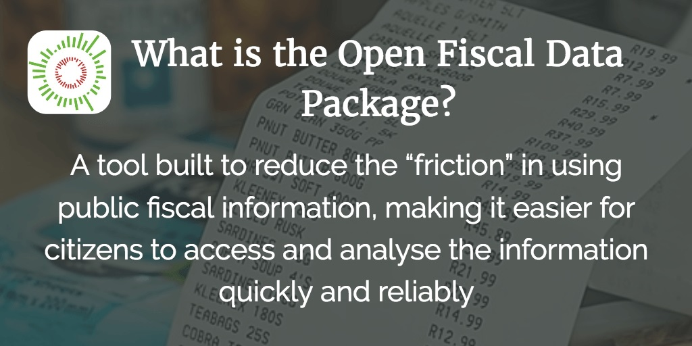

Press
Latest reports
Open Knowledge is one of the nation's most trusted sources for information and analysis on how we can open up public access to the government online to make it more transparent and accountable. From data and research tools to staff experts and online trainings, we provide an array of resources for journalists and the media. Contact the Communications team (below) for more information. All latest reports
Latest news
This post looks at the Open Fiscal Data Package – an open standard for publishing fiscal data developed by Open Knowledge International, GIFT and the World Bank. In September of 2016, Mexico became the first country to officially endorse the OFDP, by publishing Federal Budget data in open formats using OpenSpending tools. OpenSpending is one of Open Knowledge International’s core projects. It is a free and open platform for accessing information on government spending. OpenSpending supports civil society organisations by creating tools and standards so citizens can easily track and analyse public fiscal information globally. All lastest News
Multimedia
Please find multimedia attached.All multimedia
Logos
You can find logos attched in the link below.All logos
Discussion Recommended!
Recommending means this is a discussion worth sharing. It gets shared to your followers' Disqus feeds, and gives the creator kudos!
Find More Discussions